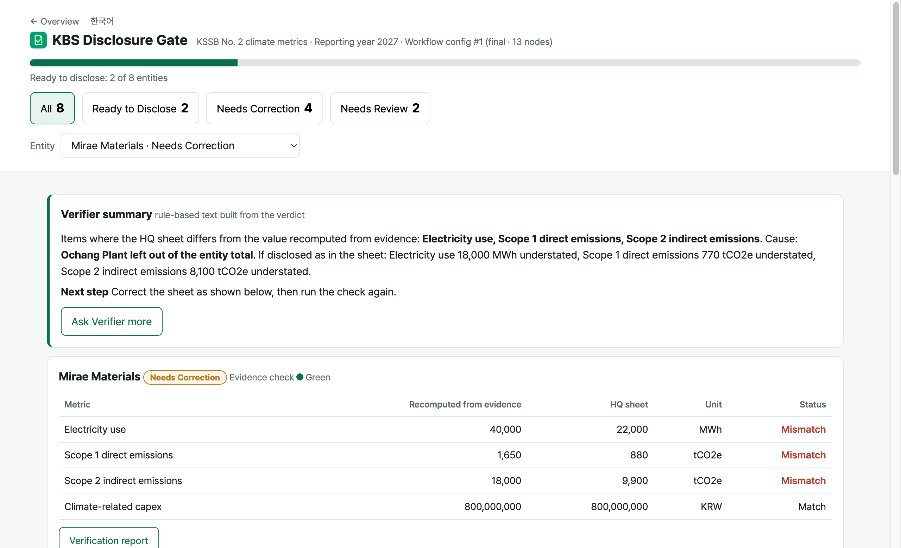
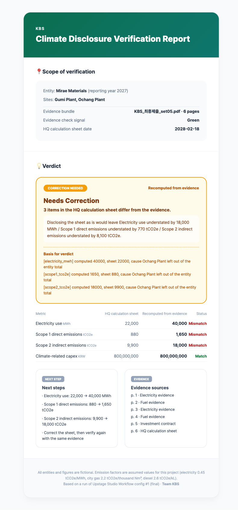
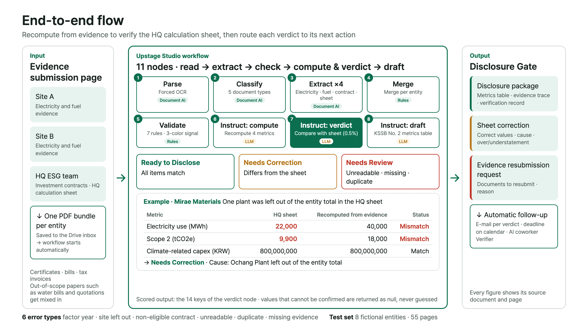
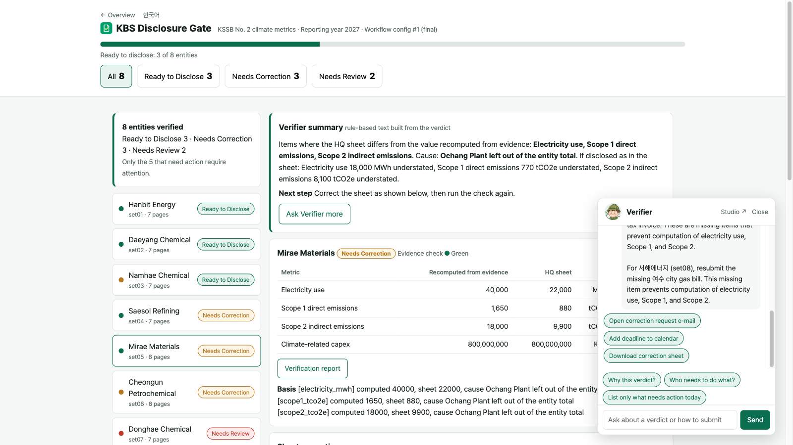

Upload each site's evidence documents and the HQ calculation sheet. The workflow calculates the figures directly from electricity and fuel bills and investment contracts, then compares them with the sheet. Reviewers only look at what does not match.

Carbon accounting and disclosure authoring solutions produce the disclosure data, and errors arise in that process too. KBS takes disclosure figures that have already been prepared and recalculates them from the original evidence to check completeness and accuracy. It does not replace existing solutions; it sits on top of them.
Tells apart wrong factor year, missing site, out-of-scope contract, unreadable document, duplicate, and missing evidence.
Records which document and page each disclosed number came from.
Reviewers only see the cases flagged Needs Correction or Needs Review.
Shows the workflow results grouped by entity. Depending on the verdict, the next step is a disclosure package, a proposed correction to the calculation sheet, or a request to resubmit evidence.
When verification of one entity finishes, a one-page report is produced. It contains the verdict, the items that differ from the calculation sheet, the size of the over- or understatement if disclosed as is, the next action, and the evidence sources.

The consolidation sheet that an HQ staff member fills in by hand from the bills sent by each site becomes the disclosed figures as is. Errors introduced while copying cannot be seen by looking at the sheet alone.
The prior-year factor is reused, overstating Scope 2 by 550 tCO2e.
One site is missing from the entity total row, understating electricity by 18,000 MWh.
VAT and an office equipment contract are added in, inflating capex by KRW 410 million.
A confirmation with a smudged usage figure cannot establish the value.
When the original and a copy are both submitted, the fuel is counted twice.
One site's gas bill is missing altogether.
The numbers in the calculation sheet are never used in the calculation. The workflow calculates only from values extracted from the evidence and then compares, so it points to both where the sheet is wrong and why.
Two sites and the HQ ESG team each upload their evidence; it is merged into one entity bundle and placed in the submission box.
Submit Evidence pageSplits the PDF page by page and classifies each as electricity, fuel, contract, calculation sheet, or out-of-scope document.
Parse · ClassifyExtracts site, usage, unit, document number, amount, and whether the page is readable.
Extract ×4Runs 7 rules for unreadable documents, missing evidence, and out-of-scope contracts, and raises signals.
Merge · ValidateRecalculates the four metrics and compares them with the calculation sheet at a 0.5% threshold.
Instruct ×2Writes the KSSB No. 2 metrics table and review comments.
Instruct
Values that cannot be established are not guessed; they are left blank and handed to a person.
All four metrics match the calculation sheet.
The metrics were calculated but differ from the calculation sheet.
Evidence is blurry, missing, or duplicated.
For each entity we fed in 2027 evidence from 2 sites. The workflow caught all 7 error types we planted on purpose.
entities
pages of evidence documents
error types
output keys behind each verdict
| Entity | Planted scenario | Verdict | Cause identified by the workflow |
|---|---|---|---|
| Hanbit Energy | Clean, with a water bill mixed in | Ready to Disclose | All items match |
| Namhae Chemical | Out-of-scope contract mixed in, but HQ excluded it | Ready to Disclose | All items match |
| Daeyang Chemical | HQ sheet left out one diesel tax invoice | Needs Correction | Scope 1 1,580 vs 1,424 |
| Saesol Refining | Calculation sheet uses the prior-year electricity factor | Needs Correction | Scope 2: 24,750 vs 25,300 |
| Mirae Materials | Site missing from the entity total | Needs Correction | Ochang Plant missing from the total |
| Cheongun Petrochemical | Capex includes an out-of-scope contract | Needs Correction | Capex: KRW 3.0 billion vs 3.41 billion |
| Donghae Chemical | Blurry scan, duplicate tax invoice | Needs Review | Ulsan electricity unreadable, Pohang diesel duplicate |
| Seohae Energy | A site's fuel evidence is missing | Needs Review | Yeosu city gas bill missing |
Where evidence comes in and where results go out are matched to the email, drive, Excel, and calendar that reviewers already use.
When a site sends evidence, an Upstage Studio trigger can be connected to run the workflow automatically.
Called through the Studio API with a pinned configuration version, so every run applies the same criteria.
Leads to resubmission request emails, deadline events, proposed corrections to the calculation sheet, and disclosure packages.
The email and calendar buttons in the demo open the compose screen of the signed-in account with the content prefilled. Triggers and API connections are features Studio provides; they are not configured in this demo.

We connected the collection of accumulated verdicts to the AI coworker in Upstage Studio. Ask "What do the Needs Correction entities have to fix?" and it answers using only the values in the table. It does not calculate any new numbers.
A team in the 2026 Energy AI Workflow Hackathon. The name comes from KSSB. The members split the work: producing the evidence documents, designing the workflow, checking the answer key, and presenting.
Seunghyun Lee · Hanho Yeo · Sanga Ko · Dongmin Lee · Eunse Jung
Created 9 evidence templates and the document bundles for 8 fictional entities.
Designed the classification, extraction, validation, calculation, and verdict nodes and their prompts.
Cross-checked the answer key against the error type table and prepared the design document and presentation materials.